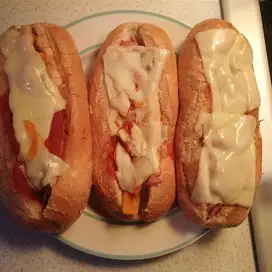

Hoagie

Description:
These hearty roast beef hoagies with lots of bell pepper
and onions are topped with traditional pasta sauce and a slice of provolone cheese.
Ingredients:
- 1 jar ragu
- 1 tbs olive oil
- 2 cloves garlic
- 1 sliced bel pepper
Steps:
-
Preheat oven to 450 degrees. Pour sauce into a small saucepan; cover and heat over low until just warm.
-
In a large skillet over medium-high heat, saute olive oil with garlic, peppers, and onion until vegetables soften, about 3 to 5 minutes;
remove vegetables from pan. Add roast beef to skillet. Saute over medium-high heat until heated through, 2 to 3 minutes.
-
To assemble sandwiches, open each hoagie bun lengthwise and divide roast beef slices among the rolls. Top with vegetables, about
1/4 cup of Ragu® Old World Style® Traditional Sauce, and one slice of provolone cheese. (Heat remainder of sauce for dipping,
if desired.)
-
Place hoagies on a baking sheet and bake for about 3 to 5 minutes until cheese is melted. Serve hot and enjoy!